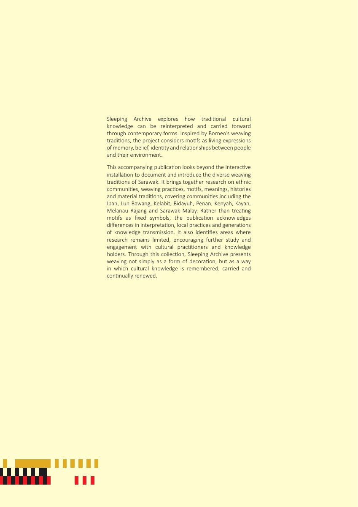
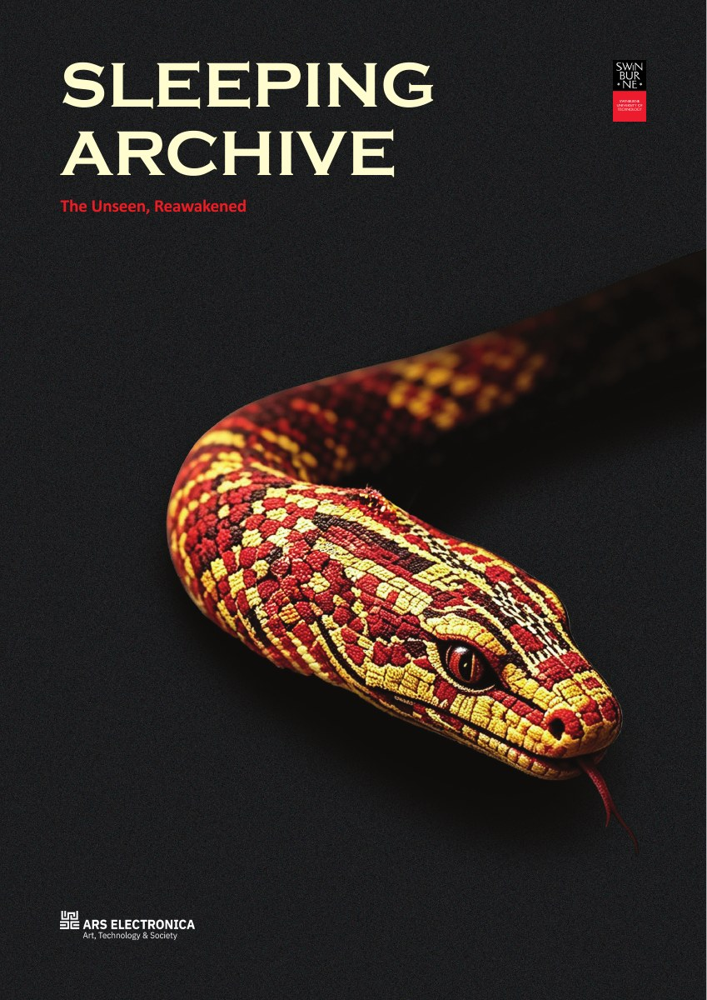
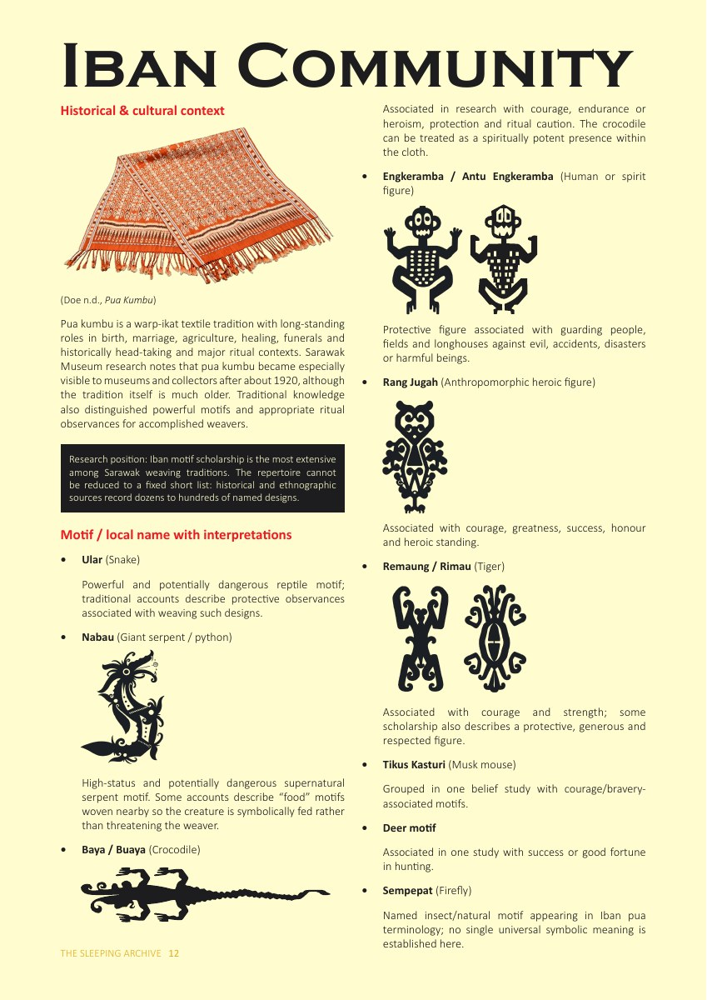
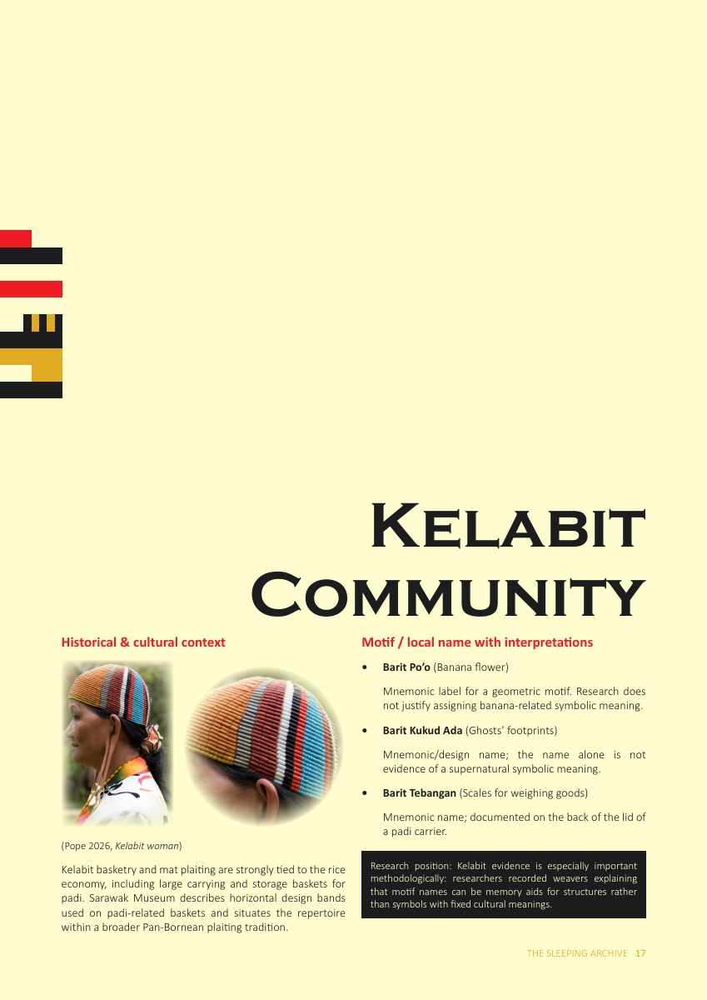
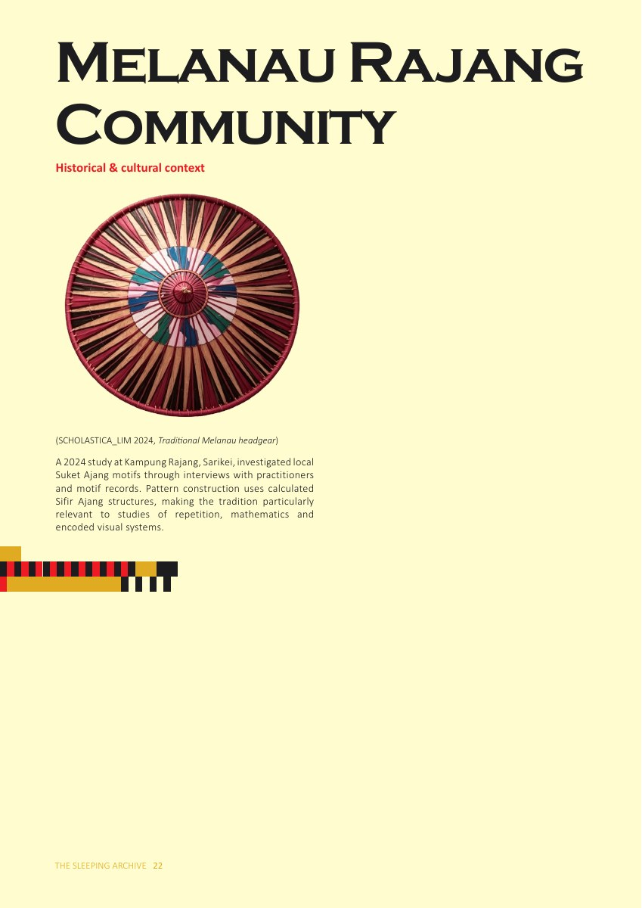
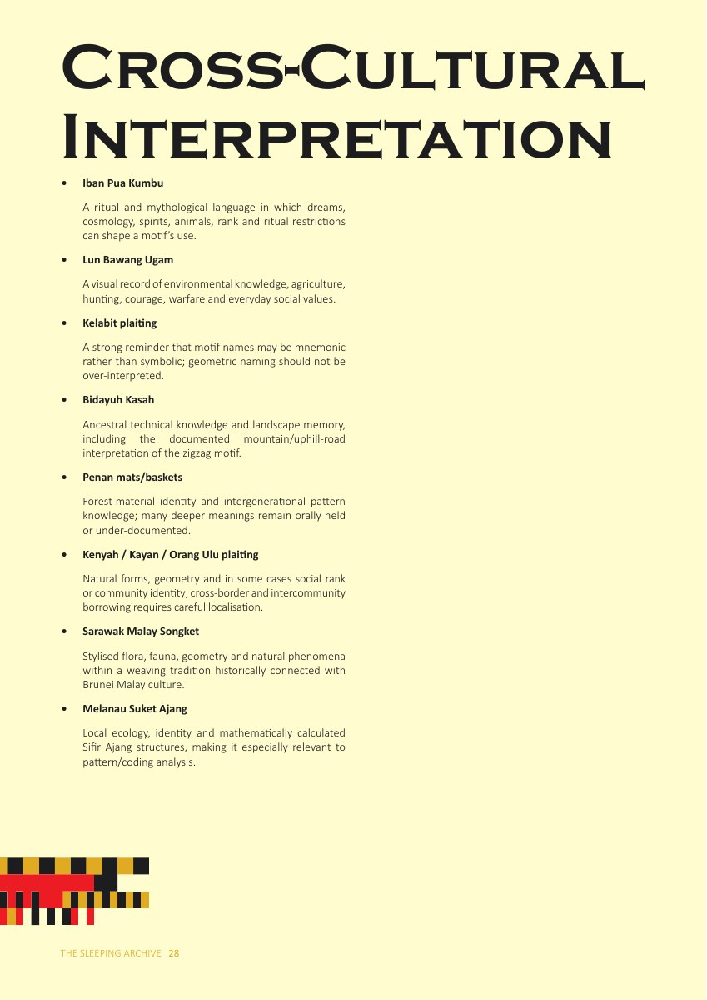

04Introduction
Before entering, please leave a few details to help us understand where our audience is joining from.
A digital archive exploring how Sarawak's weaving traditions carry memory, belief, identity and relationships between people and their environment - reinterpreted through contemporary technology.

Sleeping Archive explores how traditional cultural knowledge can be reinterpreted and carried forward through contemporary forms.
Inspired by Borneo's weaving traditions, the publication documents weaving practices, motifs, meanings, histories and material traditions across communities including Iban, Lun Bawang, Kelabit, Bidayuh, Penan, Kenyah, Kayan, Melanau Rajang and Sarawak Malay.





Use your hand gestures to interact with the archive in real time.